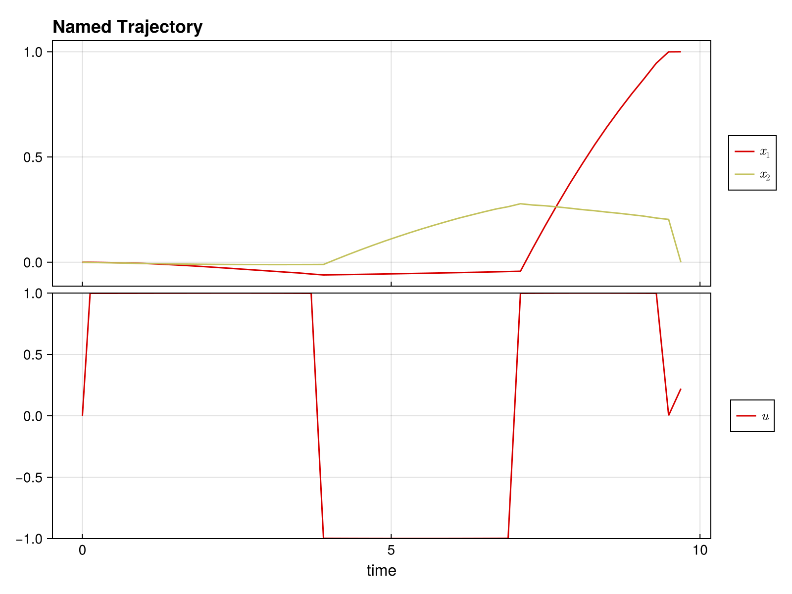

Quickstart Guide
Welcome to DirectTrajOpt.jl! This guide will get you up and running in minutes.
What is DirectTrajOpt?
DirectTrajOpt.jl solves trajectory optimization problems - finding optimal control sequences that drive a dynamical system from an initial state to a goal state while minimizing a cost function.
Installation
First, install the package:
using Pkg
Pkg.add("DirectTrajOpt")You'll also need NamedTrajectories.jl for defining trajectories:
using DirectTrajOpt
using NamedTrajectories
using LinearAlgebra
using CairoMakieA Minimal Example
Let's solve a simple problem: drive a 2D system from [0, 0] to [1, 0] with minimal control effort.
Step 1: Define the Trajectory
A trajectory contains your states, controls, and time information:
N = 50 # number of time steps
traj = NamedTrajectory(
(
x = randn(2, N), # 2D state
u = randn(1, N), # 1D control
Δt = fill(0.1, N), # time step
);
timestep = :Δt,
controls = :u,
initial = (x = [0.0, 0.0],),
final = (x = [1.0, 0.0],),
bounds = (Δt = (0.05, 0.2), u = 1.0),
)N = 50, (x = 1:2, u = 3:3, → Δt = 4:4)Step 2: Define the Dynamics
Specify how your system evolves. For bilinear dynamics ẋ = (G₀ + u₁G₁) x:
G_drift = [-0.1 1.0; -1.0 -0.1] # drift term
G_drives = [[0.0 1.0; 1.0 0.0]] # control term
G = u -> G_drift + sum(u .* G_drives)
integrator = BilinearIntegrator(G, :x, :u, traj)BilinearIntegrator: :x = exp(Δt G(:u)) :x (dim = 2)Step 3: Define the Objective
What do we want to minimize? Let's penalize control effort:
obj = QuadraticRegularizer(:u, traj, 1.0)QuadraticRegularizer on :u (R = [1.0], all)Step 4: Create and Solve
Combine everything into a problem and solve:
prob = DirectTrajOptProblem(traj, obj, integrator)DirectTrajOptProblem
Trajectory
Timesteps: 50
Duration: 4.9
Knot dim: 4
Variables: x (2), u (1), Δt (1)
Controls: u, Δt
Objective: QuadraticRegularizer on :u (R = [1.0], all)
Dynamics (1 integrators)
BilinearIntegrator: :x = exp(Δt G(:u)) :x (dim = 2)
Constraints (4 total: 2 equality, 2 bounds)
EqualityConstraint: "initial value of x"
EqualityConstraint: "final value of x"
BoundsConstraint: "bounds on Δt"
BoundsConstraint: "bounds on u"The problem summary shows the trajectory, objective, dynamics, and constraints:
probDirectTrajOptProblem
Trajectory
Timesteps: 50
Duration: 4.9
Knot dim: 4
Variables: x (2), u (1), Δt (1)
Controls: u, Δt
Objective: QuadraticRegularizer on :u (R = [1.0], all)
Dynamics (1 integrators)
BilinearIntegrator: :x = exp(Δt G(:u)) :x (dim = 2)
Constraints (4 total: 2 equality, 2 bounds)
EqualityConstraint: "initial value of x"
EqualityConstraint: "final value of x"
BoundsConstraint: "bounds on Δt"
BoundsConstraint: "bounds on u"solve!(prob; max_iter = 100, verbose = false)This is Ipopt version 3.14.19, running with linear solver MUMPS 5.9.0.
Number of nonzeros in equality constraint Jacobian...: 776
Number of nonzeros in inequality constraint Jacobian.: 0
Number of nonzeros in Lagrangian Hessian.............: 1254
Total number of variables............................: 196
variables with only lower bounds: 0
variables with lower and upper bounds: 100
variables with only upper bounds: 0
Total number of equality constraints.................: 98
Total number of inequality constraints...............: 0
inequality constraints with only lower bounds: 0
inequality constraints with lower and upper bounds: 0
inequality constraints with only upper bounds: 0
iter objective inf_pr inf_du lg(mu) ||d|| lg(rg) alpha_du alpha_pr ls
0 1.2018363e-01 3.70e+00 9.78e-02 0.0 0.00e+00 - 0.00e+00 0.00e+00 0
1 1.8020883e-01 4.76e-01 2.79e+00 -1.0 2.92e+00 - 9.05e-01 1.00e+00f 1
2 9.9722662e-02 3.11e-01 3.11e+00 -0.9 4.87e+00 - 4.67e-01 3.85e-01f 1
3 1.0661693e-01 1.86e-01 2.20e+00 -2.2 3.95e+00 - 2.78e-01 4.01e-01h 1
4 1.1223775e-01 1.10e-01 1.38e+00 -1.1 2.73e+00 - 5.03e-01 4.01e-01f 1
5 1.6830739e-01 6.85e-02 9.23e-01 -1.8 2.14e+00 - 4.36e-01 3.84e-01h 1
6 2.3580398e-01 4.93e-02 8.83e-01 -2.7 2.90e+00 - 2.32e-01 2.80e-01h 1
7 2.4710053e-01 4.71e-02 1.01e+00 -4.0 2.17e+01 - 4.54e-02 4.37e-02h 1
8 2.7638334e-01 4.33e-02 2.00e+00 -0.9 8.20e+00 - 4.13e-01 8.17e-02f 1
9 4.8794060e-01 2.21e-02 5.87e+00 -1.2 1.37e+00 - 9.83e-01 4.82e-01h 1
iter objective inf_pr inf_du lg(mu) ||d|| lg(rg) alpha_du alpha_pr ls
10 5.4881590e-01 2.10e-02 3.74e+01 0.0 1.88e+01 - 6.03e-01 5.03e-02f 1
11 6.5960691e-01 1.63e-02 1.07e+02 -0.3 9.00e-01 - 9.97e-01 2.16e-01h 1
12 7.4713019e-01 1.49e-02 7.97e+02 0.4 5.50e+00 - 9.80e-01 8.74e-02h 1
13 8.3053753e-01 1.33e-02 7.57e+03 0.7 2.38e+00 - 1.00e+00 1.09e-01h 1
14 8.7692228e-01 1.28e-02 1.24e+05 2.1 1.54e+01 - 1.00e+00 3.26e-02h 1
15 9.0387041e-01 1.25e-02 3.14e+05 2.7 2.24e+00 - 3.21e-02 2.55e-02h 1
16 9.1407259e-01 1.25e-02 2.18e+07 2.2 1.18e+01 - 9.95e-01 3.48e-03h 1
17 9.2040062e-01 1.24e-02 3.08e+09 2.2 1.06e+00 - 1.00e+00 7.04e-03h 1
18 9.2047362e-01 1.24e-02 3.83e+13 2.7 1.54e+00 - 1.00e+00 7.87e-05h 1
19 9.2962378e-01 7.57e-01 3.96e+13 2.7 8.33e+00 - 1.02e-01 1.02e-01s 20
iter objective inf_pr inf_du lg(mu) ||d|| lg(rg) alpha_du alpha_pr ls
20r 9.2962378e-01 7.57e-01 9.49e+02 2.7 0.00e+00 - 0.00e+00 1.44e-07R 2
21r 9.2948305e-01 2.00e-01 7.17e+01 -3.4 2.01e+00 - 9.61e-01 5.47e-01f 1
22 9.2560799e-01 2.00e-01 6.01e+02 2.0 1.28e+05 - 3.48e-06 3.47e-06f 1
23 9.2432539e-01 1.99e-01 6.81e+02 1.3 4.52e+02 - 2.10e-04 5.03e-04f 1
24 9.3322867e-01 1.99e-01 1.83e+03 0.6 1.12e+03 - 4.40e-05 2.89e-04f 1
25 9.3741411e-01 1.99e-01 2.84e+03 0.6 5.32e+01 - 1.00e+00 5.28e-04f 1
26 9.4615284e-01 1.98e-01 1.19e+05 0.6 9.22e-01 - 4.24e-01 8.32e-03h 1
27 9.4911781e-01 1.97e-01 4.28e+07 0.6 1.12e+00 - 1.00e+00 2.73e-03h 1
28 9.4919740e-01 1.97e-01 1.82e+11 0.6 1.47e+04 - 8.73e-05 2.02e-08h 1
29 9.4896339e-01 7.61e-02 1.79e+09 0.6 6.17e-02 8.0 9.90e-01 1.00e+00h 1
iter objective inf_pr inf_du lg(mu) ||d|| lg(rg) alpha_du alpha_pr ls
30 9.4711586e-01 7.17e-02 2.84e+06 0.6 8.53e-02 7.5 1.00e+00 1.00e+00f 1
31r 9.4711586e-01 7.17e-02 9.98e+02 -0.1 0.00e+00 - 0.00e+00 3.45e-07R 3
32r 9.4014500e-01 3.74e-02 9.15e+02 1.4 3.82e+00 - 2.24e-01 1.87e-02f 1
33 9.4072101e-01 3.74e-02 5.00e+02 -0.8 3.41e-01 - 4.64e-01 1.38e-03h 1
34 9.4538163e-01 3.71e-02 6.60e+04 -0.8 3.68e-01 - 7.83e-01 5.92e-03h 1
35 9.4548497e-01 3.71e-02 5.86e+08 -0.8 9.17e-01 - 1.00e+00 1.10e-04h 1
36 9.4008313e-01 3.03e-03 1.17e+08 -0.8 5.89e-01 - 8.01e-01 1.00e+00h 1
37 9.4217472e-01 1.11e-03 1.15e+06 2.6 5.32e-01 - 9.90e-01 1.00e+00f 1
38 9.4222730e-01 1.11e-03 2.53e+09 2.4 1.24e+00 - 1.00e+00 9.57e-05h 1
39 9.4189378e-01 1.11e-03 2.51e+07 2.7 1.02e+00 - 9.90e-01 1.00e+00f 1
iter objective inf_pr inf_du lg(mu) ||d|| lg(rg) alpha_du alpha_pr ls
40 9.4196104e-01 1.11e-03 1.96e+11 2.5 5.08e-01 - 9.45e-01 1.16e-04h 1
41 9.4196026e-01 3.15e-03 1.94e+09 2.7 2.99e-03 7.0 9.90e-01 1.00e+00f 1
42 9.4195876e-01 3.32e-03 1.01e+08 2.0 3.23e-03 6.6 9.48e-01 1.00e+00f 1
43r 9.4195876e-01 3.32e-03 9.35e+02 1.3 0.00e+00 - 0.00e+00 4.55e-07R 5
44r 9.4195836e-01 1.54e-03 9.68e+00 -4.0 2.39e-02 - 9.90e-01 9.55e-01f 1
45 9.4195153e-01 1.54e-03 8.83e+00 0.6 1.29e+01 - 9.34e-08 7.96e-07f 1
46 8.9612624e-01 1.53e-03 3.43e+04 -0.1 3.40e+01 - 1.88e-05 4.37e-03f 1
47 9.0470978e-01 1.51e-03 3.22e+04 -0.8 8.37e-02 6.1 1.00e+00 1.77e-02h 1
48 8.9656822e-01 1.47e-03 3.14e+04 -4.0 3.22e+00 - 4.27e-03 2.39e-02f 1
49 8.9247353e-01 1.45e-03 3.10e+04 -1.1 3.98e+00 - 1.07e-01 1.47e-02h 1
iter objective inf_pr inf_du lg(mu) ||d|| lg(rg) alpha_du alpha_pr ls
50 8.8288862e-01 1.43e-03 3.06e+04 0.9 2.09e+01 - 5.88e-03 1.34e-02h 1
51 8.8571638e-01 1.42e-03 5.23e+04 -0.1 8.63e-02 5.6 1.00e+00 5.72e-03h 1
52 8.8552108e-01 1.41e-03 1.87e+06 2.0 4.89e+00 5.1 1.00e+00 4.26e-03h 1
53 8.8130391e-01 1.40e-03 1.08e+06 2.7 8.75e+00 - 5.24e-01 9.93e-03f 1
54 8.8045109e-01 1.39e-03 1.44e+06 2.7 1.07e+02 - 1.00e-04 5.41e-03h 1
55 8.8141368e-01 1.38e-03 1.25e+06 2.0 1.36e+02 - 5.82e-02 1.03e-02f 1
56 8.8145932e-01 1.38e-03 1.26e+06 -3.7 1.43e+02 - 7.76e-04 4.83e-04h 1
57 9.0015985e-01 1.37e-03 3.54e+06 2.7 9.70e+01 - 2.66e-05 7.99e-03h 1
58 9.0060677e-01 1.37e-03 3.58e+06 -3.7 2.39e+02 - 2.97e-03 5.83e-04h 1
59 9.0204390e-01 1.36e-03 3.89e+06 -3.7 3.76e+02 - 1.33e-05 1.55e-03h 1
iter objective inf_pr inf_du lg(mu) ||d|| lg(rg) alpha_du alpha_pr ls
60 9.0228468e-01 1.36e-03 3.90e+06 -3.7 1.53e+01 5.6 3.72e-03 2.83e-04h 1
61 9.0340001e-01 1.36e-03 3.90e+06 2.3 1.25e+02 - 5.00e-05 1.55e-04h 1
62 9.1957965e-01 1.36e-03 3.88e+06 2.7 1.57e+02 - 4.11e-02 1.86e-03f 1
63 9.2010580e-01 1.34e-03 3.83e+06 2.0 1.36e+02 - 7.98e-03 1.23e-02f 1
64 9.2031702e-01 1.34e-03 3.83e+06 -3.7 7.01e+01 - 9.74e-05 1.88e-04h 1
65 9.2059827e-01 1.34e-03 3.83e+06 2.2 4.21e+01 - 5.11e-06 1.25e-04h 1
66 9.2090744e-01 1.34e-03 1.75e+07 1.5 4.74e+01 - 1.00e+00 1.11e-04h 1
67 9.3460093e-01 1.34e-03 5.10e+07 2.7 3.36e+01 - 3.18e-04 3.28e-03h 1
68 9.4026546e-01 1.34e-03 1.47e+08 2.7 2.46e+01 - 1.37e-02 1.16e-03h 1
69 9.4049155e-01 1.34e-03 5.27e+11 2.7 3.16e+00 - 1.00e+00 3.09e-04h 1
iter objective inf_pr inf_du lg(mu) ||d|| lg(rg) alpha_du alpha_pr ls
70 9.4039242e-01 5.87e-02 4.65e+11 2.0 3.92e-01 - 2.08e-01 2.08e-01s 20
71r 9.4039242e-01 5.87e-02 7.80e+02 1.3 0.00e+00 - 0.00e+00 3.22e-07R 2
72r 9.3353892e-01 9.76e-03 1.32e+02 0.3 2.31e-01 - 9.50e-01 3.23e-01f 1
Number of Iterations....: 73
Number of objective function evaluations = 127
Number of objective gradient evaluations = 74
Number of equality constraint evaluations = 127
Number of inequality constraint evaluations = 0
Number of equality constraint Jacobian evaluations = 77
Number of inequality constraint Jacobian evaluations = 0
Number of Lagrangian Hessian evaluations = 73
Total seconds in IPOPT = 6.532
EXIT: Invalid number in NLP function or derivative detected.Step 5: Access the Solution
Let's look at the results.
plot(prob.trajectory)
The optimized trajectory is stored in prob.trajectory:
println("Final state: ", prob.trajectory.x[:, end])
println("Control norm: ", norm(prob.trajectory.u))Final state: [1.0, 0.0]
Control norm: 6.852457547820935What You Can Do
- Multiple objectives: Combine regularization, minimum time, terminal costs
- Flexible dynamics: Linear, bilinear, time-dependent systems
- Add constraints: Bounds, path constraints, custom nonlinear constraints
- Smooth controls: Penalize derivatives for smooth, implementable controls
- Free time: Optimize trajectory duration
This page was generated using Literate.jl.